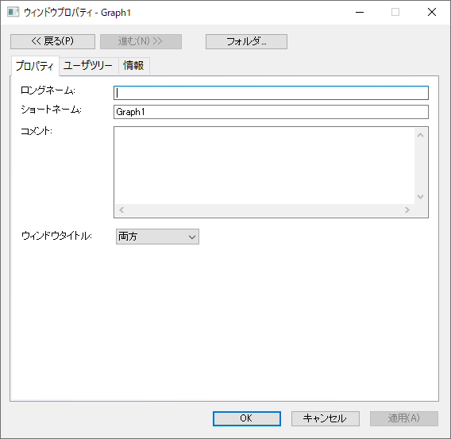
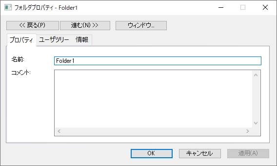
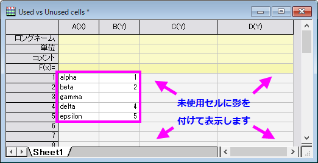

フォルダとウィンドウのプロパティ
Folder-Win-Properties-Dialog
| ウィンドウプロパティダイアログ
|
フォルダプロパティダイアログ
|
| 
|

|
ダイアログを開く
フォルダプロパティダイアログは以下のいずれかの方法で開きます。
- プロジェクトエクスプローラで表示されているフォルダを右クリックし、表示されたメニューからプロパティを選びます。
- プロジェクトエクスプローラでフォルダをアクティブにし、Alt+Enterキーを押します。
- ミニツールバーのフォルダプロパティダイアログを開くボタン
 をクリックします。
をクリックします。
- スクリプトウィンドウで folder -p; とLabtalkスクリプトを実行する。
ウィンドウプロパティダイアログは以下のいずれかの方法で開きます。
- ウィンドウをアクティブにし、メインメニューからウィンドウ：ウィンドウプロパティを開きます。
- ウィンドウのタイトルバー上で右クリックして、コンテキストメニューからプロパティを選択します。
- ウィンドウをアクティブにし、Alt+Enterキーを押します。
ボタン
ダイアログ上部には以下のようなボタンがあります。
|
|
戻る、進むボタンで現在のフォルダ/ウィンドウから他のフォルダに切り替えます。
|
|
または、
|
ウィンドウ.../フォルダ...ボタンで、プロパティダイアログをフォルダとウィンドウ間でを切り替えます。
Note: フォルダに子ウィンドウがない場合、ウィンドウボタンはグレーアウトします。
|
プロパティタブ
フォルダプロパティダイアログ
ウィンドウプロパティダイアログ
- ロングネーム、ショートネーム、コメントを入力できるだけでなく、ロングネーム、ショートネームあるいは両方をウィンドウタイトルに表示できます。
- プレビューは、プロジェクトエクスプローラのサブパネルで表示されるポップアッププレビューの種類を選択できます。
- スプレッドシートセル表記：スプレッドシートセル表記(SCN)は、列のショートネームを列挙列文字に制限します。これにより、F(x)についてcol(A)の代わりにAを、col(A)[1] の代わりにA1を使用できるようになります。
- バージョン2017から、ワークシートに列を挿入したり、移動した場合には、自動的に列のショートネームがアルファベット順に名前付けと再配列を行います。列のショートネームは、A+1 のように、col(A)+1の代わりに列の式での表記として使われます。
- このデフォルトのモードでは、列のショートネームの変更や編集は出来ません。列のショートネームを編集できるようにするには、このチェックボックスからチェックを外す、または、スクリプトウィンドウを開き、
page.xlcolname=0 を入力します。次のページもご覧ください。FAQ-849: ワークブックでスプレッドシートセル表記を無効にしたり、選択して利用するにはどのようにしたらよいでしょうか？
- スプレッドシートセル表記(SCN)が導入されたOrigin 2017から2019のバージョンでは、ワークシートの左上にあるこのアイコン
 が、SCN が有効であることを示しています。Origin 2019b以降、このアイコンは非表示になっていますが、新しいワークブックではデフォルトでSCNは有効です。
が、SCN が有効であることを示しています。Origin 2019b以降、このアイコンは非表示になっていますが、新しいワークブックではデフォルトでSCNは有効です。
- 最新のバージョンで、このアイコン
 が表示されていれば、SCNはワークブック上で無効になっています。スプレッドシートセル表記 チェックボックスを使用して設定を変更できます。
が表示されていれば、SCNはワークブック上で無効になっています。スプレッドシートセル表記 チェックボックスを使用して設定を変更できます。
- 影の付いた背景で未使用のセルを表示しています有効な時（デフォルト）、未使用のセルに影を付けて表示します -- 例として、列全体が選択されている場合に、未使用セルはプロットや解析には使用されません。次の図では、使用されているセルと使用されていないセルのコントラストが明確になるように、影の付け方が増加しています。
- 
影をつけられたセルは常に空ですが、影を付けていないセルも それらが何かを含むセルの間にある場合は空になることがあります（欠損値のシンボル("--")が含まれている場合も含む）。
- プロジェクト保存時にインポートデータを除外プロジェクト（.opjuとして）またはワークブックウィンドウ（.ogwuとして）を保存するとき、このチェックボックスをオンにしてワークブック内のインポートされたデータはクリアされますが、他のデータ（計算または他のパフォーマンスから）はクリアされません。以下によってインポートされたデータを消去します。
- 一般的なファイルのインポートツール - データ：ファイルからインポートの下の殆どのメニュー項目
- データへの接続 - データ：ファイルに接続／Webに接続からアクセス
- データベースのインポート - データ：データベースからアクセス
Note：データコネクタからインポートされたデータの場合、このチェックボックスは、データコネクタアイコンをクリックしてアクセスしたときの保存時にインポートデータを除外メニュー項目と同じです。
ユーザツリータブ
フォルダ/ウィンドウプロパティダイアログのユーザーツリー タブでは、現在のフォルダ/ウィンドウに関連するユーザーツリーを表示、編集することができます。これは、ノート ウィンドウには適用されません。
ユーザツリーを編集するには、ツリーまたはノードを右クリックし、ショートカットメニューから目的のコマンドを選択します。
| 名前の変更
|
現在のツリーまたはノードの名前の変更や編集ツリーノードの名前の変更ダイアログが開きます。ツリーまたはノードの名称は（半角）文字と数字だけをサポートしており、最初は文字である必要があります。
|
| 削除
|
現在のツリーまたはノードを削除します。
|
| ツリーの追加
|
このタブにユーザツリーを追加します。
|
| ノードの追加
|
現在のツリーまたはノードに新しいノードを追加します。ツリーノードの追加ダイアログが開き、ノードの名前とタイプを指定できます。利用できるタイプは、数値、テキスト、ブランチです。
|
|
Note:例えば、インポートにより自動的に追加されたようなノードなど、いくつかのノードの値は編集不可です。このような場合には、値は青字で表示されます。
|
情報タブ
フォルダ/ウィンドウのプロパティダイアログの情報タブには、種類、サイズ、含む、作成日、場所など、現在のフォルダ/ウィンドウの基本情報が表示されます。